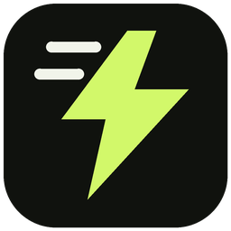

Browser link
For public, direct HTTPS files. FetchVolt uses available networks and scans files with Windows Defender before saving.
Private sessions, local URLs and browser warnings stay in the browser. Cookies and login sessions are never copied. Login or POST-based files may require browser downloading; switch this off first.
Automatic handoff is off by default.
No analytics. No access to webpage content. Save folder: Downloads\FetchVolt. The desktop app has the existing local MCP server; this extension exposes no AI endpoint.